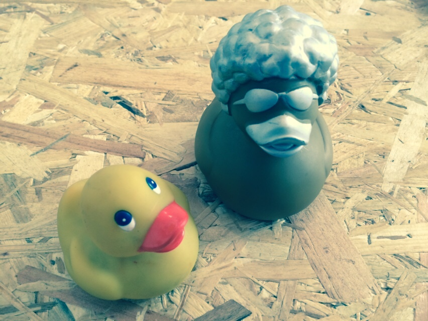

Notre mission
Résoudre les problèmes day-to-day des étudiants
à l'aide d'un assistant personnel.
Timeline
- Lancé à Sciences Po en février 2014
- Refonte en été
- Camping début septembre
- Levée fin décembre
- Pivot début mars
Nos valeurs
- Transparency
- Continuous improvement
- Ship often
- Don't ask permission, ask forgiveness
- Done is better than perfect
- Focus on creating value
Tools
- Slack : Emails killer
- Github : Code, bugs, roadmap techs, process...
- Trello : MVP, Day 2 Day
- Sunrise : who / when / where
Stack technique
- Archi système : OVH / Vagrant / Puppet
- Backend : Rails / Postgres / Redis
- Front : AngularJS
- Mobile : ionic
Tech méthodo
- Test unit, CI et CD
- Boyscout
- Code reviews
- Pair programming
- Duck debugging

Ducks, ducks everywhere
Pour postuler
Les instructions pour postuler se trouve
sur notre dépôt github
Jobs
La liste des postes à pourvoir:
Contact tech@meetj.am